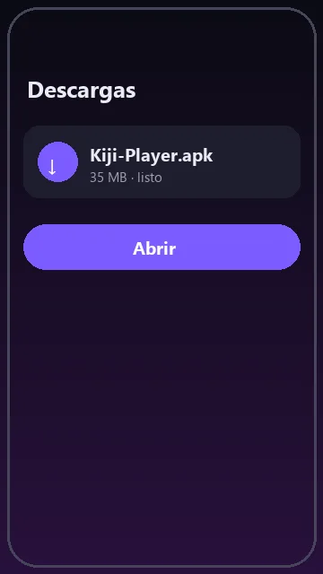
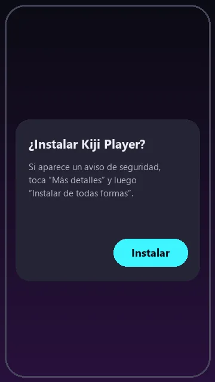
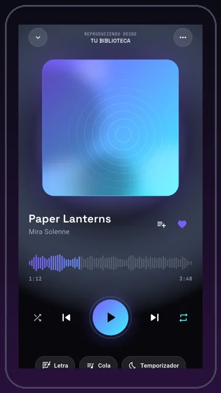

Reproductor libre para tu música y YouTube Music. Sin anuncios, sin pagos, sin cuenta obligatoria y sin telemetría: nada sale de tu dispositivo sin que lo pidas. A free player for your music and YouTube Music. No ads, no payments, no account required and no telemetry: nothing leaves your device unless you ask.
Descargar KijiDownload KijiOtras plataformas:Other platforms: Android (.apk) Windows Linux (.tar.gz) todas las versionesall versions

1 Toca «Descargar Kiji» y abre el archivoKiji-Player.apk.
Tap “Download Kiji” and open the Kiji-Player.apk file.

2 Permite instalar desde el navegador y toca «Instalar». Si aparece Play Protect, mira la pregunta de abajo. Allow installs from your browser and tap “Install”. If Play Protect shows up, see the question below.
3 Abre Kiji y elige tu estilo. Listo: sin cuenta, sin anuncios. Open Kiji and pick your style. Done: no account, no ads.Sí. Kiji es software libre (GPL-3.0): todo el código está publicado y se compila en GitHub a la vista de todos. No tiene anuncios, ni rastreadores, ni analíticas. Cada versión se firma siempre con la misma clave, así Android solo acepta actualizaciones del mismo autor.
Yes. Kiji is free software (GPL-3.0): all the code is published and built on GitHub in the open. It has no ads, trackers or analytics. Every release is always signed with the same key, so Android only accepts updates from the same author.
Aparece con las apps que no vienen de Google Play. Toca «Más detalles» y luego «Instalar de todas formas». Kiji no está en Google Play porque no usa sus servicios ni sus pagos.
It shows up for apps that don't come from Google Play. Tap “More details” and then “Install anyway”. Kiji isn't on Google Play because it doesn't use its services or payments.
Es el aviso de SmartScreen para instaladores nuevos. Toca «Más información» y «Ejecutar de todas formas».
That's SmartScreen's warning for new installers. Click “More info” and “Run anyway”.
Kiji te avisa cuando hay una versión nueva (lo puedes apagar). Descárgala desde aquí e instálala encima: tus playlists y ajustes se quedan. También puedes usar Obtainium con el enlace de GitHub.
Kiji lets you know when there's a new version (you can turn this off). Download it here and install it over the old one: your playlists and settings stay. You can also use Obtainium with the GitHub link.
Descarga el .tar.gz, descomprímelo y abre kiji_player. Necesitas una distribución reciente con mpv (libmpv) y WPE WebKit 2.0 instalados (por ejemplo Debian 13 o Fedora 42). Ubuntu todavía no trae WPE WebKit 2.0.
Download the .tar.gz, extract it and run kiji_player. You need a recent distribution with mpv (libmpv) and WPE WebKit 2.0 installed (for example Debian 13 or Fedora 42). Ubuntu does not ship WPE WebKit 2.0 yet.